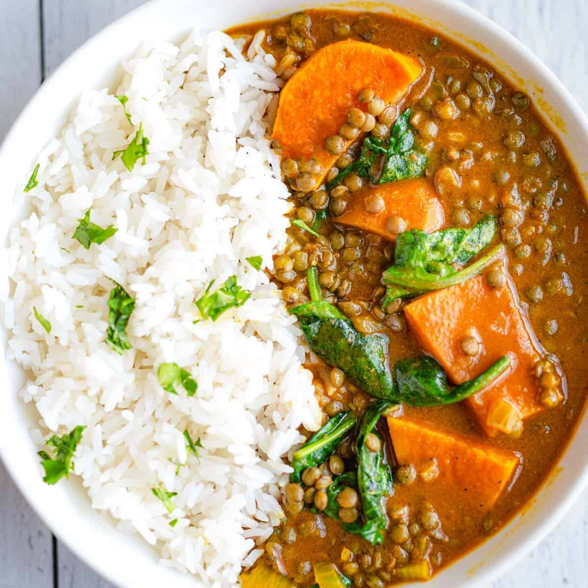

Lentil and Vegetable Curry

Description
A wholesome and aromatic curry made with red lentils, coconut milk, and a mix of vibrant vegetables. Serve with rice for a complete meal!
Ingredients
- 1 cup red lentils, rinsed
- 1 onion, chopped
- 2 cloves garlic, minced
- 1 tbsp ginger, minced
- 1 can diced tomatoes
- 1 can coconut milk
- 2 cups vegetable broth
- 1 cup spinach or kale
- 1 tbsp curry powder
- 1 tsp turmeric
- 1 tbsp olive oil
- Cooked rice (for serving)
Steps
- Heat olive oil in a large pot over medium heat. Add onion, garlic, and ginger, sauté until softened.
- Stir in curry powder and turmeric, cook for 1 minute.
- Add lentils, diced tomatoes, coconut milk, and vegetable broth. Bring to a boil, then reduce heat and simmer for 20-25 minutes until lentils are tender.
- Stir in spinach or kale and cook until wilted.
- Serve over cooked rice.
Index